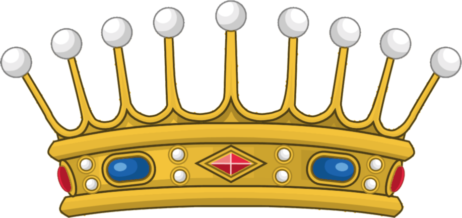

Nobili - Feudatari - Patrizi - Conti
Blasone della famiglia Sabino o Sabini di Altamura Fonte bibliografica "Dizionario storico blasonico delle famigle noboli e notabili italiane estinte e fiorenti" vol.II compilato dal Comm. G.B. di Crollalanza edito presso la direzione del giornale, Pisa 1888.
Antica ed assai nobile famiglia feudataria d'Abruzzo, con prima residenza in Chieti, conosciuta come Sabini o Sabino, propagatasi, nel corso dei secoli, in diverse regioni d'Italia e del Mondo. La leggenda narra che la Famiglia discenda da Raino, Conte della Sabina nel secolo IX, appartenente ad una stirpe ramo della celebre casata dei Crescenzie, che ha primeggiato nella storia di Roma dalla metà del secolo X alla metà del secolo XI. Ciò di cui invece storicamente siamo certi e che tal famiglia passò a risiedere in L'Aquila sul calar del secolo decimo sesto ed ivi venne ascritta al Patriziato. Estintasi nel ramo primogenito nel secolo decimo settimo, la famiglia Sabino sopravvisse e sopravvive tutt'ora nei rami collaterali, tra cui quello che in Lanciano diede personaggi distintisi come organai e musicisti. E' fiorita in Altamura un 'altra omonima famiglia, la cui parentela con la precedente non è stata storicamente accertata, alla quale appartenne quel Bernardo che, nel 1497, per gli eminenti servigi resi da lui e dai suoi maggiori alla Regia Casa d'Aragona, venne dal re Federico riconosciuto nei privilegi e nel titolo di conte palatino, già concessi dall'imperatore Enrico (VI ad un Angelo, suo antenato. Similmente in (Veneto ove iS. furono nobili in Venezia. Da una analisi cromatica e simbolica dello stemma, possiamo, infine, ricavare alcune importanti informazioni sulle virtù associate a tal cognome. L'azzurra essendo il colore del cielo, simboleggia tutte le virtù più elevate e, tra quelle spirituali, devozione, fedeltà, castità, giustizia, santità. Per le qualità mondane simboleggia bellezza, nobiltà, fortezza, fermezza incorruttibili, vigilanza, vittoria, perseveranza, ricchezza, amore per la patria, buon augurio, fama gloriosa. Il leone d'oro in campo azzurro rappresenta il valore di un capitano che con la prudenza giunse ai più alti onori. La torre è contrassegno d'antica e cospicua nobiltà, perchè' nessuno fino dai tempi remoti, poteva fabbricar torri se non era d'illustre e potente famiglia. I cognomi così antichi, senza dubbio alcuno, rendono decoro non solo alle famiglie ma anche alle città che li hanno accolti; pare siano, infatti, molto riguardevoli i soggetti viventi di questa famiglia che, con tanto decoro, sostentano questo nobile cognome, che ha avuto vari soggetti illustri.
Copyright © by Stefano Sabino 2025